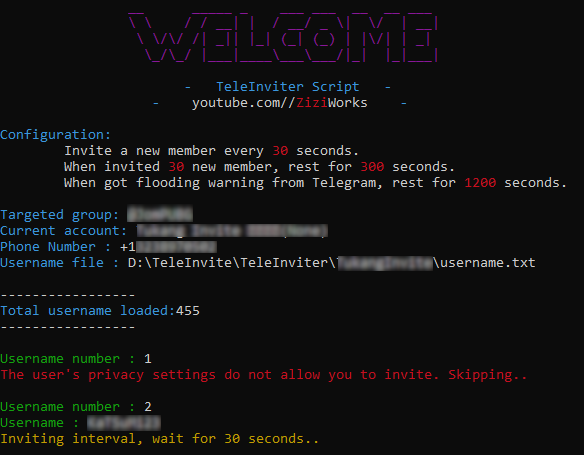

Youtube | Instagram | Facebook | Telegram Channel | Telegram Group | Twitter
A script written on Python for automatic telegram inviting.
It can be used for inviting into group only, not working for channel.
This script can be run on Window's command prompt and Termux terminal on Android.

Script is where the magic begins. Go ahead and download it now.
If you don't download the script yet get it now by clicking /releases
../your_path/ mean path/directory/location to your TeleInviter file.cd ../your_path/pip install -r requirements.txt
cd D:\teleinviter
pip install -r requirements.txt
../your_path/ mean path/directory/location to your TeleInviter file.pkg update && pkg upgradepkg install python gitcd ../your_path/pip install -r requirements.txt
pkg update && pkg upgrade
pkg install python git
cd /storage/emulated/0/teleinviter
pip install -r requirements.txt
[SETTING]
invite_interval = 35
pax_size = 50
pax_rest = 300
flood_rest = 1200
target_group = ziziworks
api_id = 1102903
api_hash = 344d3fe528197386d5ec96de03ef8e56
| Object | Variables | Description |
|---|---|---|
| [SETTING] | ❌ | 🚫 Don't change this 🚫 |
| invite_interval | 35 | Invite a username every 35 seconds |
| pax_size | 50 | Invite 50 username before a rest |
| pax_rest | 300 | Rest for 300 seconds, Set 0 for no rest |
| flood_rest | 1200 | If one's account got flood error from telegram. Rest for 1200 seconds |
| target_group | ziziworks | Invite to what group? Specify the group ID |
| api_id | 1102903 | Telegram's application API ID |
| api_hash | 344d3fe528197386d5ec96de03ef8e56 | Telegram's application API Hash |
Username1
Username2
Username3
...
python main.py phone_number [optional for notes]
❗ Input number in international format (example: +1234567890)
python D:\teleinviter\main.py +639162995600
⚠️ Make sure you enter your phone number which linked with telegram. Do not enter the number listed in the example.
../your_path/ mean path/directory/location to your TeleInviter file.
Windows
python ../your_path/start.py +123456789 username.txt
python D:\teleinviter\start.py +123456789 username.txt
Termux
cd ../your_path/python ../your_path/start.py +123456789 username.txt
python D:\teleinviter\start.py +123456789 username.txt
Have a bug or an issue with this script? Open a new issue here on GitHub or leave a message on my telegram.
** ⚠️ Disclaimer**: Please be note that this is a learning project for me. I am by no means responsible for any usage of this script. Use on your own behalf. I'm also not responsible if your accounts get any punishment due to extensive use of this script.